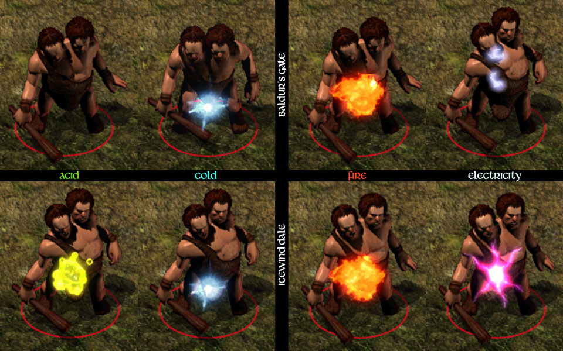

IWDification
A Gibberlings Three Mod
Authors: CamDawg and DavidW
On the web: Home
page, discussion
forum, and Discord
Version 9
Languages: English, Chinese (Simplified), French, Polish, Russian, Spanish
Platforms: Windows, macOS, and Linux
GitHub: Gibberlings3/iwdification
IWDification is a mod to bring some of the elements of Icewind Dale into the Baldur's Gate series of games. A lot of this project is based upon the work of the discontinued IWD-in-BG2 conversion project, which later formed the backbone of IWDEE.
Please report any bugs on the forums so that they can be addressed.
IWDification works on all IE games that use the Baldur's Gate II engine, which includes the original Baldur's Gate II (Shadows of Amn with or without Throne of Bhaal), the Enhanced Editions of Baldur's Gate and Baldur's Gate II, and the three major Baldur's Gate conversion mods (Tutu, BGT, and EET). Content will be adjusted as appropriate for the detected platform—e.g. no +5 items or ninth level spells will be added to a Tutu or BGEE game.
For non-EE games:
You will see references to "original" or "vanilla" BG2 to differentiate it from the Enhanced Editions. Note that this includes any installation running on the original BG2 engine, notably BGT or Tutu.
TobEx is highly recommended for players using the spell packs on the original games. Without TobEx, spell selection screens during character creation are limited to 24 spells, as are spellbook pages. Since there are more than 24 spells available at some levels you will not be able to see all spells available or be able to select them. Cat's Grace, a second-level arcane spell, relies on functionality provided by TobEx and will be skipped if it's not detected.
The fourth-level divine spell Giant Insect relies on Infinity Animations, as the beetles summoned by the spell do not have animations in the original BG2, and will be skipped without the mod being installed. Polymorph Self and druidic shapeshifting will also have an additional option, Boring Beetle, if IA is installed.
If you should encounter any bugs, please report them to the authors at the IWDification forum. In addition, IWDification is available on GitHub, so fixes and changes can be submitted by the community.
Known Mod Conflicts
Bard Class Update: Add IWD Bard Songs should be installed after the Rogue Rebalancing and Garrick: Tales of a Troubadour mods. Note that IWDification's new bard songs will replace Rogue Rebalacing's normal trueclass bard song, but it will not affect the kitted bard songs and will preserve the HLA bard songs—e.g. a trueclass bard will get IWDification's bard songs, but they will get RR's version of the Enhanced Bard Song as an HLA selection. Kitted bards will just get Rogue Reblancing's songs.
IWDification should be installed before argent77's Trials of the Luremaster for Baldur's Gate mod.
Known Issues
Two-handed axes use the same combat and paperdoll animations as halberds.
Contact Other Plane has no dialogue written, and is therefore unavailable at present.
Known Issues (Non-EE Games)
For the Arcane and Divine Spell Packs, not all spells could be converted to the original Baldur's Gate II engine. The Cat's Grace spell (part of the Arcane Spell Pack) requires TobEx for its unique dexterity modifications. Giant Insect (part of the Divine Spell Pack) requires the beetle animation, part of Infinity Animations. Soul Eater, Seven Eyes, Favor of Ilmater, and Spiritual Wrath are not available. All of the compromises made for the Arcane or Divine Spell Packs can be found in the notes on their respective spell listings (arcane, divine).
If you install the Arcane Spell Pack, Divine Spell Pack, or Add IWD Bard Songs after Expanded Portrait Icons, they can roll back some of the changes from Expanded Portrait Icons. Given that Expanded Portrait Icons is the last component of the mod, this should only be a concern if you're running the installer multiple times.
First time installing a mod? Check out G3's comprehensive tutorial: A New Player’s Guide to Installing and Playing Mods.
Special Note for Siege of Dragonspear from Steam/GOG
Good Old Games (GOG) and Steam both package the additional content for Siege of Dragonspear in a method that WeiDU, the tool used to install this mod, cannot access. You must run a program called DLC Merger on your SoD installation before you can install this or any other WeiDU-based mod.
Enhanced Editions Note
The Enhanced Editions are actively supported games. Please note that every patch update will wipe your current mod setup! If in the middle of a modded game you might want to delay the patch update (if possible) as even after reinstalling the mods, you might not be able to continue with your old savegames. Alternatively, copy the whole game's folder into a new one that can be modded and will stay untouched by game patches. It is important that you install the mod to the language version you are playing the game in. Otherwise, the dialogues of the mod will not show but give error messages.
Windows
IWDification for Windows is distributed as a self-extracting archive and includes a WeiDU installer. To install, simply double-click the archive and follow the instructions on screen.
Alternatively, the files can be extracted into your game directory using 7zip or WinRAR. When properly extracted, your game directory will contain setup-iwdification.exe and the folder iwdification. To install, double-click setup-iwdification.exe and follow the instructions on screen.
You can run setup-iwdification.exe in your game folder to reinstall, uninstall or otherwise change components.
MacOS
IWDification for macOS is distributed as a compressed tarball and includes a WeiDU installer.
First, extract the files from the tarball into your game directory. When properly extracted, your game directory will contain setup-iwdification, setup-iwdification.command, and the folder iwdification. To install, double-click setup-iwdification.command and follow the instructions on screen.
You can run setup-iwdification.command in your game folder to reinstall, uninstall or otherwise change components.
Linux
IWDification for Linux is distributed as a compressed tarball and does not include a WeiDU installer. Linux users will need to do a one-time install of WeiDU (and a few other adjustments) as described in this great writeup.
To install, run 'WeInstall iwdification' in your game folder.
Note for Complete Uninstallation
In addition to the methods above for removing individual components, you can completely uninstall the mod using setup-iwdification --uninstall at the command line to remove all components without wading through prompts.
IWDification has several components, which can be installed completely independently of one another. The components are broken into three broad categories.
Miscellaneous Changes
Icewind Dale Casting Graphics (Andyr)
Also available in the Tweaks Anthology mod
When your character casts a spell, you get a pretty sequence of colors swirling around their hand depending on the school the spell cast came from. A necromantic spell, for example, looks quite different from creating an illusion. The Baldur's Gate and Icewind Dale games use different sets of visual animations and sound effects for the schools. This component allows you to use the Icewind Dale graphics and audio on the Baldur's Gate series of games. Screenshots for comparison are available in the Anthology gallery.
Commoners Use Drab Colors
Also available in the Tweaks Anthology mod
Unlike Icewind Dale, commoners in the Baldur's Gate series wear brightly colored clothes. This tweak changes the random selections of colors for commoners to a drab palette. The dress of noblemen and noblewomen are not affected.
Two-Handed Axes
Icewind Dale also featured two-handed axes, as opposed to the strictly one-handed variety found in the Baldur's Gate series. This component scatters normal and magical two-handed axes throughout the game to make them available for players. Two-handed axes use the axe proficiency and have base stats of 9 speed and 1d10 damage. Spoilers about their precise locations are available on the forums.
Expanded Polymorph Self Options
This component adds three new forms to the arcane Polymorph Self spell: winter wolf, polar bear, and boring beetle (the boring beetle requires Infinity Animations on original BG2).
Use IWD Damage Animations
Enhanced Editions Only
When a creature is hit by elemental damage, a small animation plays on the target based on the damage type. IWD and BG2 use different graphics:

Fire and cold are very similar. While there's no default acid damage graphic in BG2 many spells/items play one manually, like Melf's Acid Arrow. The electricity animation is the biggest change. The accompanying sound effects are also updated.Randomized Enemy Equipment
Enhanced Editions Only
Icewind Dale routinely randomized the weapons and other equipment of enemy mobs, e.g. skeletons in IWD could attack with just about any melee or ranged weapon in the game. This component does the same for BG and BG2 random enemies. It is limited somewhat by the animation system of the game: gnolls, for example, only support weapon animations for long swords and halberds so the randomization is limited. You can optionally install high-quality items—these are non-magical items that provide an additional +1 to-hit over their normal counterparts—to provide a little more variation. If the Two-Handed Axes component is installed, these will also be added to the mix.
At present, this component only randomizes equipment on truly random mobs, e.g. most hobgoblins in BG will get randomized equipment but special, fixed groups (such as the ones with Joia's ring at the Friendly Arms Inn) will not. This is done primarily to avoid conflicts with other mods which may alter equipment. You can read more details about this on the relevant forum thread.
Increase Spear Damage
In Icewind Dale spears do 1d8 as base damage instead of BG/BG2's 1d6 base damage. This component will increase the damage die size of all spears by two, e.g. spears that were doing xd6+y damage now do xd8+y; spears that were doing xd10+y damage are updated to xd12+y. This will affect melee and ranged abilities (if another mod like Ashes of Embers provides ranged spears), and update the item descriptions as appropriate.
IWD Class Updates
Bard Class Update: Add IWD Bard Songs (formerly known as Bard Song)
Also available in the Sword Coast Stratagems mod
Bards in Icewind Dale gained different bard songs as they leveled:
- The Ballad of Three Heroes — Available at level one, this provides all allies with +1 to hit, +1 damage, and +1 to saving throws.
- The Tale of Curran Strongheart — Available at level three, this song protects the party from fear and removes any current fear effects.
- Tymora's Melody — Available at level five, the party gains +1 luck, +3 to all saves, and +10 to lore and thieving skills.
- The Song of Kaudies — Available at level seven, this provides a 50% resistance to sound-based attacks and spells such as power words, sirine charm, silence, and others.
- The Siren's Yearning — Available at level nine, this song enthralls your foes, preventing action for five rounds on a failed save vs. spell.
- War Chant of the Sith — Available at level 11, this provides +2 AC, regeneration of two HP/round, and 10% resistance to all crushing, missile, piercing, and slashing damage.
As the songs become available to the bard, the ability to freely switch between them is available through innate abilities. This component only affects trueclass bards, as the available kits use variants of BG2 bard song for kit advantages and/or disadvantages. Bards with these new songs will be able to pick Enhanced Bard Song as a high-level ability and it will appear as another option with the innate abilities for the other songs.
Bard Class Update: Selectable Bard Songs for Jesters and Skalds
Requires Throne of Bhaal
This component allows Jesters and Skalds to switch their bard songs between their normal song and the new Enhanced Bard Song they can select as a High-Level Ability. Blades are skipped as their bard song is, in every way, inferior to Enhanced Bard Song. Trueclass bards are also omitted—if Bard Class Update: Add IWD Bard Songs is installed they already have the ability to switch songs and, if it's not installed, then they're in the same situation as Blades in that the Enhanced Bard Song is superior to their normal song. This component is skipped if Rogue Rebalancing's Bard High Level Ability revisions component is installed as it provides a superior, kit-specific Enhanced Bard Song for both Jesters and Skalds and there would be no reason to switch back.
Bard Class Update: Use IWD Spell Progression
Also available in the Tweaks Anthology mod
Bards in Icewind Dale could learn up to eighth-level spells and this component makes the IWD table available. This is also available in Tweaks Anthology as Alter Bard Spell Progression Table: Un-Nerfed Table. A comparison of the spell progression tables is available from the Anthology documentation.
Druid Class Update: Use IWD Shapeshifting and Ability Progression
This makes several changes to the druid class. Trueclass druids swap their BG2 shapeshifting (wolf, black bear, brown bear) for the IWD progression: winter wolf (level 5), boring beetle (level 7, but kept as black bear for vanilla games without Infinity Animations), polar bear (level 9), fire elemental (level 11), earth elemental (level 13), and water elemental (level 15). Immunity from poison is moved from level 15 to level 9, and instead of the BG2 elemental resists at levels 18/21/24, the druid becomes immune to fatigue at level 15.
Details of the new forms (and the original three from BG) are below for comparison:
| Winter Wolf | Boring Beetle | Polar Bear | Fire Elemental | Earth Elemental | Water Elemental | Brown Bear | Wolf | Black Bear | |
|---|---|---|---|---|---|---|---|---|---|
| Level | 5 | 7 | 9 | 11 | 13 | 15 | 7 | 7 | 7 |
| Strength | 18 | 18/51 | 18 | 19 | 23 | 18 | 18 | 18 | 18 |
| Dexterity | 13 | 7 | 10 | 9 | 5 | 14 | 12 | 17 | 12 |
| Damage | 1d6 slashing | 5d4 slashing | 1d12 slashing | 1d8 crushing | 4d8 crushing | 4d8 crushing | 1d6 piercing | 1d8 piercing | 1d4 piercing |
| Weapon strikes as... | +1 | +2 | +3 | +4 | +4 | +4 | +1 | +1 | +1 |
| Base AC | 2 | -2 | 4 | 2 | -2 | -2 | 6 | 6 | 7 |
| Base APR | 2 | 1 | 3 | 1 | 1 | 1 | 3 | 1 | 3 |
| Notes | Haste (normal); 75% cold resistance; -25% fire resistance | Haste (normal); 50% slashing, piercing, missile resistance | 75% cold resistance; -25% fire resistance | 100% fire resistance; 15% electricity, acid, physical damage resistance; -50% cold resistance | 75% missile resistance; 50% slashing, piercing resistance; 25% fire, cold, resistance; -50% crushing resistance | 75% acid, physical damage resistance; -25% cold resistance; -75% electrical resistance |
Druid Class Update: Allow Elves to be Druids
Enhanced Editions Only
As simple as it gets: this opens the druid class and fighter-druid multi-class to elves, but is only available on EE games.
Paladin Class Update: IWD Abilities and Skills
The paladin's Detect Evil ability becomes an at-will ability, and Protection From Evil only protects the paladin but lasts 24 hours. Paladins can cast Cure Disease (per the cleric spell) once per day and Smite Evil once per day (does 1d6 plus 1d6 per thee levels of magic damage to an evil opponent). Paladins are now immune to disease and become immune to fear at level three.
Paladin Class Update: Use IWD Spell Progression
Also available in the Tweaks Anthology mod
Icewind Dale expanded the level and number of spells high level paladins could cast. This component replaces the game tables with those of IWD-HoW. This is also available in Tweaks Anthology as Alter Paladin Spell Progression Table: Icewind Dale-Heart of Winter. A comparison of the spell progression tables is available from the Anthology documentation.
Ranger Class Update: Tracking [Lava]
This component changes a ranger's tracking ability from a High-Level Ability to an at-will innate granted to all rangers at level one, as it is in Icewind Dale. As part of this Lava has written longer, IWD-style tracking entries for all areas in the Baldur's Gate and Siege of Dragonspear portions of the game. The existing tracking entries in SoA and ToB remain.
As of version 7 this component has two options: make tracking available to all rangers or only un-kitted rangers. Under either choice, tracking gets removed as a HLA for all rangers.
Ranger Class Update: Use IWD Spell Progression
Also available in the Tweaks Anthology mod
Icewind Dale expanded the level and number of spells high level rangers could cast. This component replaces the game tables with those of IWD-HoW. This is also available in Tweaks Anthology as Alter Ranger Spell Progression Table: Icewind Dale-Heart of Winter. A comparison of the spell progression tables is available from the Anthology documentation.
Thief Class Update: Evasion
Enhanced Edition Only
At level seven, thieves earn the Evasion perk. When a thief is hit by a spell that can be evaded (Fireball, Lightning Bolt, &c.), the thief is allowed a Save vs. Breath to completely avoid the effects. If the Saving Throw is failed, the spell works normally, including a save for half damage if the spell allows for it. A helpless thief (e.g. held, stunned, or asleep) cannot use Evasion.
As of version 6 this component has two options: apply the bonus to all thieves (including kits), or just to un-kitted thieves. This will include mod thief kits, but only if they're installed prior to this component.
Spell Packs
Arcane Spell Pack
Also available in the Sword Coast Stratagems mod
This component adds more than 30 arcane spells from Icewind Dale. This component does not alter existing BG2 spells to match their IWD counterparts, except as noted below. Complete descriptions are available on the project pages as well as in-depth technical information.
- Updated: Emotion, Hopelessness is updated to its IWD counterpart to match the other three new spells in the Emotion series. The fifth level elemental conjuring series is updated to its IWD counterpart to facilitate the addition of the water elemental spell. IWD has its own version of Mordenkainen's Sword which is brought into the game as Mordenkainen's Force Blade.
- Level 1: Expeditious Retreat
- Level 2: Cat's Grace2, Decastave, Snilloc's Snowball Swarm
- Level 3: Icelance, Lance of Disruption
- Level 4: Beltyn's Burning Blood; Emotion, Courage; Emotion, Fear; Emotion, Hope; Mordenkainen's Force Missiles; Shadow Monsters; Shout; Vitriolic Sphere
- Level 5: Conjure Lesser Water Elemental, Demi-Shadow Monsters, Shroud of Flame, Summon Shadow
- Level 6: Antimagic Shell, Conjure Water Elemental, Darts of Bone, Lich Touch, Monster Summoning IV, Otiluke's Freezing Sphere, Shades, Soul Eater1, Trollish Fortitude
- Level 7: Acid Storm, Malavon's Rage, Monster Summoning V, Mordenkainen's Force Blade, Seven Eyes1, Suffocate
- Level 8: Great Shout, Iron Body, Mind Blank, Monster Summoning VI
- Level 9: Monster Summoning VII
1 Only available for EE games
2 Only available for EE games OR vanilla games with TobEx installed
Divine Spell Pack
Also available in the Sword Coast Stratagems mod
This component adds more than 40 divine spells from Icewind Dale and does not alter existing BG2 spells to match their IWD counterparts. Divine spellcasters will receive these spells, as appropriate, in their spellbooks as they level up. Joinable NPCs also receive updates to their spellbooks to account for the new spells. Complete descriptions are available on the project pages as well as in-depth technical information.
- Updated: The arcane version of Energy Drain is updated to match the restrictions of the divine version of Energy Drain, e.g. it won't work on undead and extraplanar creatures
- Level 1: Cause Light Wounds, Curse, Sunscorch
- Level 2: Alicorn Lance, Beast Claw, Cause Moderate Wounds, Cure Moderate Wounds
- Level 3: Cause Disease, Cause Medium Wounds, Circle of Bones, Cloudburst, Exaltation, Favor of Ilmater1, Mold Touch, Moonblade, Prayer, Spike Growth, Storm Shell
- Level 4: Blood Rage, Cloud of Pestilence, Giant Insect2, Produce Fire, Recitation, Smashing Wave, Star Metal Cudgel, Static Charge, Thorn Spray, Unfailing Endurance, Wall of Moonlight
- Level 5: Animal Rage, Mass Cause Light Wounds, Righteous Wrath of the Faithful, Shield of Lathander, Spike Stones, Undead Ward
- Level 6: Entropy Shield, Spiritual Wrath1, Whirlwind
- Level 7: Destruction; Energy Drain; Greater Shield of Lathander; Impervious Sanctity of Mind; Mist of Eldath; Stalker; Symbol, Hopelessness; Symbol, Pain; Wither
1 Only available for EE games
2 Only available for vanilla games with Infinity Animations installed
Expanded Portrait Icons
Non-EE Games Only
On the Enhanced Editions, all of the Icewind Dale portrait icons for the spells in the Arcane and Divine Spell Packs and the songs from Bard Class Update: Add IWD Bard Songs are added. Unlike the Enhanced Editions, portrait icons in the original BG2 are limited to a fixed number of slots and, as such, many of the imported spells and bard songs do not get their unique portrait icons. These are made available as a separate component because there's no easy way to patch these into the game and this component will destructively overwrite changes made by other mods to expand the portrait icon system.
IWDification is the hard work of CamDawg and DavidW. For issues, suggestions and general feedback, the IWDification forums are the best resource. Visit the Gibberlings Three Forums for information on this and any other Gibberlings Three mods on which we may be working.
CamDawg created this mod, based primarily on the hard work of DavidW on IWD-in-BG2, and furthered by the Beamdog team for IWDEE. You can find out more about IWDification by visiting the mod forum or the project page.
Since this mod, and in particular the spell packs, draw heavily upon the work in IWD-in-BG2, the same thanks and acknowledgments apply. In particular thanks to Nythrun, who helped immensely with the conversion of the spells. Thanks to Andyr for the development of the IWD casting graphics, lifted entirely from the Tweaks Anthology.
I'd also like to thank TotoR, who identified several issues and provided working versions of Shout, Great Shout, Wall of Moonlight, Smashing Wave, and Mordenkainen's Force Missiles for oBG2. Thanks to Luke who identified several issues with the IWDEE 2.6 spells, and thanks to Galactygon for same as well as advice on getting the new IWD spells to blend in more with their BG2 counterparts. Thanks to subtledoctor for providing the code for getting the spells to work with SR's spell deflection.
Thanks to Gorlod for the Spanish translation, mickabouille for the French translation, Arkie for the Russian translation, and Patricida for the Polish translation!
Tools Used in Creation
- WeiDU by Wes Weimer, the bigg, and Wisp
- Near Infinity by Jon Olav Hauglid, FredSRichardson, and argent77
- Notepad++, by the Notepad++ team
- WeiDU Notepad++ Highlighters by cmorgan, updated by argent77
- ConTEXT Text Editor by Eden Kirin
- DLTCEP by Avenger
- IESDP maintained by igi and lynx
- PS BAM by Sam.
- Bammer by Scott Brooks
- BAM Workshop by Glenn Flansburg
- WeiDU ConTEXT Highlighters by Idobek, updated by cmorgan
The modding community for the Infinity Engine has been going strong for more than 10 years now, and is the culmination of thousands of unpaid modding hours by fellow fans of the game. Modders produce their best work and players get the best, well-supported mods when we all work together.
There are two big ways to upset this harmony. One is to claim someone else's work as your own. The second is to host and redistribute a mod without permission from the author(s).
Be kind to your fellow players and modders. Don't do either.
Version 9 - June 26, 2025
- Updated Polish translation from Patricida
- Updated Chinese translation from Lzw104522773
Version 8 - June 11, 2025
- Added new component: Increase Spear Damage
- A new Polish translation from Patricida
- In an attempt to make component names less cumbersome, the IWD Class Updates: (Class): Name components have been reformatted to (Class) Class Update: Name, e.g. IWD Class Updates: Ranger: Tracking [Lava] changes to Ranger Class Update: Tracking [Lava]
- Some updates for Ranger Class Update: Tracking [Lava]:
- Added some compatibility code for Divine Remix's Heartwarder kit, which also gets ranger tracking as an HLA
- Fixed a bug where the installer would present the wrong names for the various Tracking subcomponents
- Fixed a bug where the default tracking message on BG2EE was incorrect
- Basic Two-Handed Axes will now break due to the Iron Crisis in the BG part of the game. Also touched up some formatting issues in the regular and upgraded Battle Standard axes
- Thief Class Update: Evasion will now provide better feedback if something was dodged with evasion
- Some fixes for the Divine Spell Pack
- Adding Energy Drain will now also update the arcane version, namely, it won't work on undead or extraplanars like the divine version
- Joinable NPCs should no longer get duplicate spells, specifically Physical Mirror, Cause Critical or Serious Wounds
- Bard Class Update: Add IWD Bard Songs was overwriting the bard kit descriptions on oBG2
- The Arcane Spell Pack updates the Wand of Monster Summoning to better match the new Monster Summoning spells. The wand was summoning 12 monsters on a single charge, instead of the correct six, if the summoning cap was removed
- Paladin Class Update: Use IWD Spell Progression and Ranger Class Update: Use IWD Spell Progression lower the level where these classes get their first spell; however their caster levels are still pegged to when they used to get their first spell. Their caster levels are now adjusted to match.
- Internally the components shared with Tweaks Anthology are now more tightly linked for easier maintenance
Version 7 - January 27, 2025
- The Ranger Class Update: Tracking [Lava] changes can now be applied to all rangers or limited to un-kitted rangers
- Fixed a bug with the Druid Class Update: Use IWD Shapeshifting and Ability Progression component where it would fail to install if the player had a placeholder entry for an ability table in the master kit list
- Fixed an install issue with Randomized Enemy Equipment
Version 6 - January 15, 2025
- Added new component Ranger Class Update: Tracking [Lava]
- Added Russian translation; thanks Arkie!
- Paladin's Smite Evil wasn't playing its sound due to a missing file
- Updated portrait icons on oBG2 weren't aligned in the UI correctly
- Fixed oBG2 bug with the spell type of the new bard songs
- Evasion can now be applied to all thieves and kits or only non-kitted thieves
- Fixed a conflict where IWD_EET was installing its own version of a projectile that was causing the arcane spell component to not install
- Spell fixes:
- On oBG2, Snilloc's Snowball Swarm was missing its sound
- Acid Storm in oBG2 was missing its sound due to a typo
- Trolls summoned in oBG2 had some leftover death-revive sequencing, which has been deleted (summoned trolls should just die and don't need fire/acid)
- The number of clouds generated by Cloudburst has been reduced on oBG2
- Other EE fixes from the updated library (primarily from SCS v35+)
Version 5 - July 22, 2022
- French translation, courtesy of mickabouille
- IWDification now includes a configuration option in iwdification/iwdspells/iwdspells.ini that allows the player to override IWD spells added by other mods. By default, IWDification will not override IWD spells added by other mods; this ini allows the user to force IWDification to use its version of spells even if they were previously added by other mods.
- IWDification installs IWD spells in two phases: first it installs a spell, then does some 'postproduction' changes (e.g. accounting for BG2 resources not present in IWD, cosmetic changes to match BG2 aesthetics, &c.). These postproduction changes now explicitly check that a given spell was added by IWDification and not a different mod, as this could potentially generate warnings or prevent installation.
- Resolved a small incompatibility with the multiclass kit mod
- In general, IWD included tieflings as extra- or outer-planar creatures in terms of spell effects. We've decided to make the choice to treat tieflings as prime material in origin as this matches better with the game lore.
- Due to a typo, paladins would play a random string in the feedback window when they received their immunity to fear
- Spell fixes:
- Spiritual Wrath was not playing a cosmetic visual due to a typo
- Song of Kaudies was supposed to protect against Demilich Howl, Moon Dog Howl, and War Cry, but was doing so by trying to copy an effect which may not be present on all games
- Skeletons created by Soul Eater were supposed to have a randomized melee weapon, but the script was targeting the wrong resource
- Monster Summoning I could cause crashes if certain animations weren't defined
- Spell fixes that only apply to oBG2:
- Animal Rage wasn't working
- Blood Rage no longer affects enemies, per its description
- Cloud spells could fail if a needed action (added in ToB) wasn't present, so the mod now adds it explicitly
- Whirlwind could hit more than once per round
- Wither isn't supposed to affect golems, undead, or extraplanar creature but this wasn't working due to a missing file
- Several summoning spells were summoning the wrong HD of creatures when cast at the minimum level
Version 4 - May 10, 2022
- Thief Class Update: Evasion was not clearing out the maximum levels for its new effects, meaning it was not working as intended (or at all) in many cases.
Version 3 - May 10, 2022
- Added Spanish translation, courtesy of Gorlod
- Added Bard Class Update: Selectable Bard Songs for Jesters and Skalds component
- In the Randomized Enemy Equipment, the High Quality Mace was being built from a base flail, and the HQ Flail from a mace. While the HQ weapons would not break, they could still generate broken weapons in the wielder's inventory.
- Fixed a bug with Randomized Enemy Equipment where creatures could generate multiple copies of their newly-randomized equipment (notably the hobgoblins at the FAI could have multiple copies of their weapons)
- The kit/class text descriptions for Paladin Class Update: IWD Abilities and Skills was correctly adding the new abilities, but was also leaving the outdated text instead of replacing it
- Resolved a possible conflict between Spell Revisions and Paladin Class Update: IWD Abilities and Skills; specifically, IWDification was not correctly updating the duration for the paladin's Protection From Evil ability.
- Fixes for the Arcane and Divine Spell Packs:
- Various arcane scrolls were either not being added or only one scroll was being added, specifically: Conjure Water Elemental; Demi-Shadow Monsters; Emotion, Courage; Emotion, Fear; Monster Summoning VI; and Suffocate.
- Entropy Shield had an offcenter visual effect for casting, which has been fixed
- Mind Blank correctly blocked petrification effects, but was not blocking the 'Petrification' feedback in the combat log due to a typo
- Fixed a bug with Expanded Portrait Icons where it would misalign all of the portrait icons
- Fixed a bug where the Beast Claw icon was offcenter for oBG2 games
- (Great) Shout and Smashing Waves had a cosmetic bug of duplicate projectile animations on oBG2
- Fixed bug where spell scrolls added by the spell components were lacking a description image
Version 2 - March 9, 2022
- The Use IWD Damage Animations component was not documented in the readme
- Fixed a bug where some of the new portrait icons added in the spell components were not showing up properly on portraits
- Lance of Disruption was not working on EE games due to an error in its projectile
Version 1 - February 19, 2022
- Fixed bug where the icon for High-Quality Arrows was off-center. Also fixed bug where the icons for High Quality Longbows and High Quality Composite Longbows were swapped
- Fixed a rare bug where items added from Randomized Weapons could get duplicated
- Fixed a number of bugs inherited from imported IWDEE assets—affecting Siren's Yearning bard song; divine spells Animal Rage, Cause Disease, Circle of Bones, Cloudburst, Smashing Wave, and Symbol Hopelessness; and arcane spells Shout and Great Shout. These have also been reported to Beamdog for their inclusion in a future patch.
- The new Water Elemental spell was summoning Air Elementals; also fixed a few issues with descriptions not getting properly updated
- Due to timing differences, the new bard songs were lasting just over a round and blocking themselves, effectively making them work every other round
- Fixed some minor install issues, notably, the install would fail if it deferred to another mod's Monster Summoning spells, and fixed a minor conflict with Angel's Made in heaven mod
- Better feedback: Shout and Great Shout now add deaf portrait icons to their deafened targets; Darts of Bone will cause 'Ability Score Drained' icon to its strength drain effect; Circle of Bones will use 'Blade Barrier' icon for oBG2; Storm Shell will use 'Protection From The Elements' icon for oBG2
- Various spells which create magical weapons—Iron Body, Lich Touch, Mordenkainen's Force Blade, Star Metal Cudgel, and Moonblade—had off-center icons in oBG2 games
- Cleaned up some leftover EE opcodes in spells for oBG2 games.
- Storm Shell no longer stacks
- Fixed some big problems with the new portrait icons added in oBG2—namely that some were not getting properly updated; was leaving an EE-style icon description table; and they could be partially rolled back when another spell component was installed after. The last item is not completely fixed, but the oBG2 component has been moved to the end of the mod to make it less likely to happen. Spells which get their own unique icon will no longer show ancillary icons, e.g. Iron Body will only show an Iron Body icon, and not the extra Protection from Poison icon.
- Righteous Wrath of the Faithful blocks haste for allies of the same alignment, but was not blocking Mazzy's custom haste spell
- Fixed a bug on oBG2 where the underlying framework left a nonsense script in the override
- For players using IRR or other mods that use the old-style Shield Amulet, it gets updated to block Mordenkainen's Force Missiles (other versions just cast the Shield spell directly, which was already updated to block MFM)
- Bard songs should now better update class and kit descriptions for oBG2
- For BGEE games, tried to be a little more forgiving in determining which druid kits get the revised abilities
- Fixed a bug where Smashing Wave was not working on EE games
- Resolved conflicts between Rogue Rebalancing and Garrick: Tales of a Troubadour with the bard song component
- Bards who receive the new bard songs can now select the Enhanced Bard Song HLA.
Version Release Candidate 2 - September 30, 2021
- Some general re-organization of the mod components:
- Everything in the IWD Class Updates group was renamed in a more consistent scheme
- Added Randomized Enemy Equipment as a component for EE games
- Split the paladin class updates into separate components, Paladin Class Update: IWD Abilities and Skills and Paladin Class Update: Use IWD Spell Progression
- Similarly, the two druid class updates are presented as separate components rather than as a menu
- Added the Bard Class Update: Use IWD Spell Progression and Ranger Class Update: Use IWD Spell Progression components. All of the spell progression components are from Tweaks Anthology, and will not cross-install
- Updated the core converter for the Arcane and Divine Spell Packs and bard songs for Bard. The core converter now also handles the Additional Portrait Icons component. Among its improvements:
- Portrait icons for the new spells were not working on EE installs.
- Entropy Shield was supposed to block the damage from Flame Strike while allowing the visuals to play, but was instead outright removing the damage from Flame Strike. Evasion also wasn't being applied to the new Flame Strike variants.
- Whirlwind's stun effect was bypassing magic resistance; Alicorn Lance also had MR issues
- Removed some redundant cruft from various spells
- Mold Touch really is fixed now. For real. Seriously.
- Cloud of Pestilence had some incorrect durations on its immunity effects
- missile.ids entries are now added alongside projectl.ids entries
- Suffocate's slow effect could be avoided with free action
- Summoned lizardmen now have weapons
- Symbol, Pain's description is now accurate
- Spiritual Wrath, Smashing Wave, and Lance if Disruption had incomplete projectiles sue to missing animations
- Incorporated numerous cosmetic suggestions from Galactygon to help the new spells blend in with the existing spells
- Harm no longer affects extra-planar creatures, bringing it in-line with other Cause X Wounds spells
- Fixed some oversights in the cross-patching routines (e.g. making sure a new divine spell properly blocks/checks for a new arcane spell)
- Rather than trying to (incompletely) block individual petrification spells and abilities, Iron Body now makes the user immune to petrification outright
- Seven Eyes was not accounting for the various BG2 clones of spells it should be protecting from/reacting to, Eye of Fortitude was also requiring a target to cast
- Fixed a bug that prevented installation on BGEE
- Fixed a bug that prevented installation on oBG2 when Infinity Animations (specifically the beetle animation) was installed
- Fixed animation/class/race issues for summons on oBG2
- Fixed a conflict with One Pixel Productions over Cause X Wounds spells
- Fixed a conflict with Item Revisions over the Wand of Monster Summoning
- Thanks to TotoR, Smashing Wave and Wall of Moonlight now work on oBG2. He also provided (further) cosmetic improvements for Shout and Great Shout.
- Based on feedback from Galactygon, Icewind Dale Casting Graphics now looks a lot better and includes casting sounds
- The Druid Class Update: Use IWD Shapeshifting and Ability Progression component was only being applied to un-kitted druids. The component will now test kits and, if they're also using the base druid abilities, make these changes as appropriate. The upshot being that Avengers now receive the new shapeshifting and abilities.
- The spell components would fail to install in French; unfortunately these need an updated French translation to work and will now skip
Version Release Candidate 1 - July 25, 2021
- A major overhaul of the way the Arcane and Divine Spell Packs and bard songs for Bard are handled. Specifically, these are now pulled from the newly updated IWDEE 2.6 release and worked from there. In the future, it should be easier to pull these resources from future IWDEE patches.
- While spells were sourced from the new 2.6 IWDEE patch, additional issues were addressed for the mod (and submitted to Beamdog and/or BG2 Fixpack, as appropriate):
- You could indefinitely delay the fatigue effects of Blood Rage by re-casting it
- Cloudburst now removes Fireshield and will protect from Aura of Flaming Death for its duration
- Wall of Moonlight could potentially interact with spell protections, unlike other area-of-effect spells
- Static Charge could be dispelled, but the portrait icon would persist
- Animal Rage could potentially have multiple checks with spell protections, instead of just the one check when it's cast
- Mold Touch could potentially leave its target in state 'Diseased' permanently, instead of just during the spell's duration
- Mass Cause Light Wounds was available to druids (and rangers and shamans) despite none of the other Cause X Wounds spells being available
- Beltyn's Burning Blood was bypassing magic resistance checks in nearly all situations
- Emotion, Fear would always remove the effects of Emotion, Courage even when the target resisted via save or magic resistance
- On a failed save, targets of Great Shout would receive duplicate combat feedback and other effects
- Lich Touch now uses paralyze, not hold, as its on-hit effect, bringing it inline with other undead attacks
- Darts of all types set the user's APR to 3, however, the APR boost on Darts of Bone had a save and could fail as a result
- One of the generic BG2 priest AI scripts (EE and original) could get stuck in a loop when it tried to cast Confusion
- Cause Disease is an abjuration, but its description still listed it as necromancy
- Fixed many graphical issues with the spells, namely, that they were too transparent on vanilla BG2 or had black fogs around the new graphics.
- Renamed the Bard Song component as Bard, as it's now part of a broader series
- Added new components to bring in IWD class abilities under the names Druid, Paladin, and Thief. A ranger update is similarly planned, but requires a bit of community help for the tracking component.
- The changes made to the arcane spell Polymorph Self were broken into their own component, Expanded Polymorph Self, instead of being rolled into the Arcane Spell Pack
- Added Additional Portrait Icons as a separate component for vanilla BG2, since it has the potential to not play nicely with other mods
- Shout, Great Shout, and Mordenkainen's Force Missiles have been made available in vanilla BG2 as part of the Arcane Spell Pack. IWD's version of Mordenkainern's Sword is added as Mordenkainen's Force Blade instead of replacing the existing BG2 version.
- Mold Touch is now available available in vanilla BG2 as part of the Divine Spell Pack
- Spell Revisions has a component where Spell Deflection can now protect against area-of-effect spells, and IWDification now takes this into account when installing new spells.
- Blood Rage was not really working on vanilla BG2; in an attempt to keep it ally-only it ended up working on pretty much no one instead.
- Lich Touch now has its saving throws sorted for vanilla BG2
- Resolved a potential conflict with SCS (and other spell mods) by correcting the internal names of Symbol, Pain and Symbol, Hopelessness
- Cure Moderate Wounds is now added correctly to temples which offer healing
- Decastave will crash oBG2 if cast when an offhand weapon or shield is equipped. As such, it's changed to be a one-handed staff weapon, like the staff-mace.
Version Beta 6 - May 22, 2020
- Corrected a logic error which allocated the wrong animations, and prevented Giant Insect from installing, if you installed the Arcane and Divine spellpacks without quitting the installer between them
Version Beta 5 - January 10, 2018
- Polymorph Self always listed boring beetle as an available form, even when it wasn't
- Bard Songs were updated to their IWDEE counterparts, and several bugs cleaned up
- New arcane spell scrolls are now available in the Black Pits, Black Pits II, and Siege of Dragonspear areas, as appropriate (thanks AstroBryGuy)
- Cleaned up the tra files, and wrote a tool to assist translators
- An internal 'Testing' component was erroneously included in Beta 4 and has been removed
Version Beta 4 - January 8, 2018
- Completely rebuilt the spell components upon the work of IWDEE. As such, all spells work for the EE engine and were backported (again) to the vanilla engine, with a lot of bugfixes along the way. Several spells which were heretofore unavailable—such as Seven Eyes or Wall of Moonlight—now work for the EE engine.
- Two-handed axes now use halberds for their description images
- The icon for Battle Standard's ability is now properly transparent
- Updated the code for Commoners Use Drab Colors to the more robust version from Tweaks Anthology
Version Beta 3 - August 28, 2013
- Cure Moderate Wounds had an incorrect icon reference, which could cause crashes when you tried to memorize the spell
Version Beta 2 - August 18, 2013
- Made a first pass at having the new spell icons blend in
- Added lore and prices to Two-Handed Axes
- Cat's Grace wasn't being added to any stores
- Added Cure Moderate Wounds
- Shambling mounds summoned by Stalker no longer drop their paws
- Entropy Shield wasn't blocking Icelance
- Emotion: Hopelessness scroll now has icon
- Blood Rage had an extraneous effect that would kill the target
- Alicorn Lance now uses a nicer glow on the target
- Static Charge's initial charge worked, but not its followup damage
Version Beta 1 - July 18, 2013
- Initial release. Let's see what breaks.